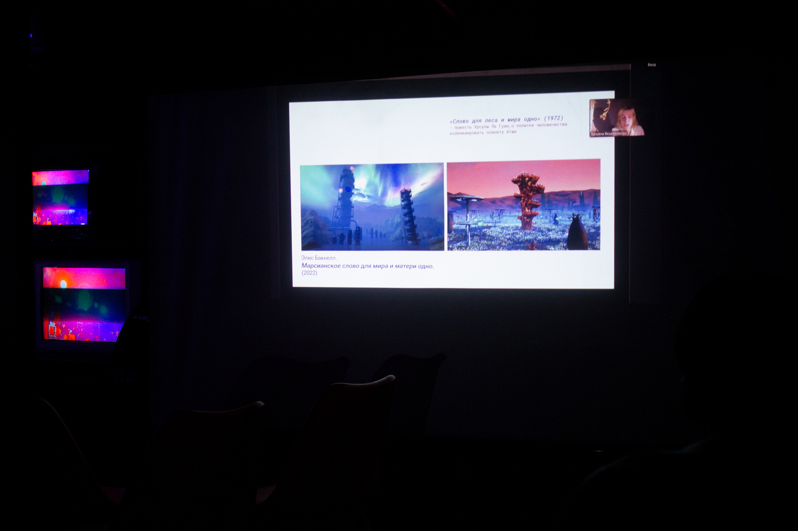

Лабиринт, где игрок может найти себя или потеряться в бесконечных отражениях. Игра — это свободный импульс или бегство?
Virtial Existence — Фестиваль экспериментального кино и видеоарта. Темой фестиваля стала виртуальная и альтернативная реальность. Художники экспериментируют с искусcтвенным интеллектом, 3D, AR, VR, генеративной графикой и machinima.
Совместный показ арт-группы «Тишина», фестиваля экспериментального кино «Внутри»
и художественного объединения «Побеги».

Лекцию провела мультимедиа художница Таня Ведерникова
на тему «Горизонт ожиданий: Образы будущих в цифровом искусстве».
Кураторы: Кристина-Серафима Мунтеану, Дарья Иванова
Художники: Yul, Яна Черкасова, Ирина Вилкина, Елизавета Ильницкая, Даниэла Головушкина, Дарья Иванова, Sasha Svoloch, Катя Сахарова, Александр Шутенков, Ольга Минина, Михаил Лукашов, Олеся Чернявская, Юрий Фролов
Фото: Vladimir Demontazh, Lera Bursheva
показ прошел в Санкт-Петебруге и в Москве.
2024